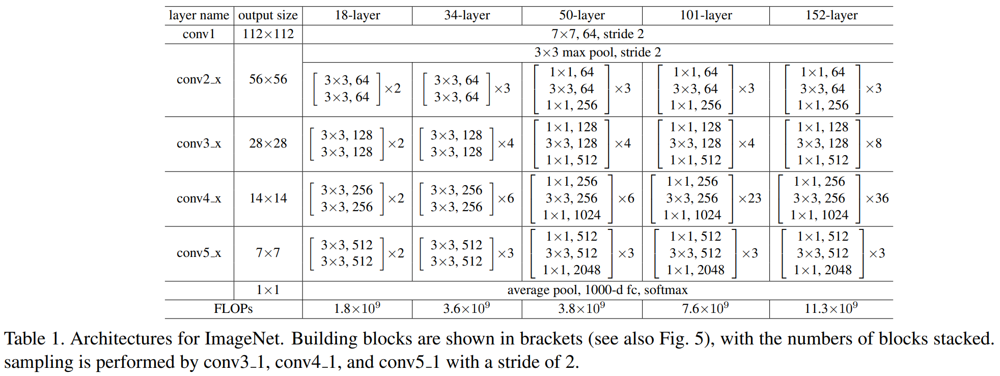

1. 처음 입력은 무엇인가요?
CIFAR-10은 작은 컬러 이미지를 10가지 종류로 분류하는 데이터셋입니다. 이미지 하나는 높이 32 × 너비 32 × RGB 3채널입니다. 처음부터 고양이라는 글자가 들어 있는 것이 아니라 픽셀 숫자들이 있습니다.
배열로 표현한 이미지 모양은 (32,32,3), 강의 그림에서는 (W,H,C), 즉 가로·세로·채널 순서로 읽겠습니다. 실제 이미지 배열은 (H,W,C)이므로 실행 코드와 구분합니다. PIL 이미지 자체는 Tensor가 아니므로 이 단계의 표기는 배열 관점입니다.
| 번호 | 0 | 1 | 2 | 3 | 4 | 5 | 6 | 7 | 8 | 9 |
|---|---|---|---|---|---|---|---|---|---|---|
| 클래스 | airplane | automobile | bird | cat | deer | dog | frog | horse | ship | truck |
일반적으로 class_names 목록 순서가 번호와 연결됩니다. 하나의 이미지를 처리해서 이 열 가지 중 하나를 고르는 것이 목표입니다.
확인 1 · 아직 전처리 전입니다
RGB 이미지의 강의 도식 shape를 W,H,C(가로·세로·채널) 순서로 쓰세요.
다음 단계로 넘어가기 전에: “3은 클래스 수가 아니라 무엇인가?”를 말해 보세요.
노트북 셀 6: CIFAR10·class_names. Intro 16~17쪽 및 DNN/CNN 18쪽과 연결.
2. 전처리: 숫자 범위와 축 순서 맞추기
import torchvision
train_tfms = torchvision.transforms.Compose([
torchvision.transforms.RandomCrop(32, padding=4),
torchvision.transforms.RandomHorizontalFlip(),
torchvision.transforms.ToTensor(),
torchvision.transforms.Normalize(CIFAR10_MEAN, CIFAR10_STD),
])다시 32×32로 crop
최종 크기 유지
8비트 RGB의 0~255 → 0~1
각 채널의 값 조정
shape와 값은 구분합니다. Normalize는 모양을 바꾸지 않고 (값-mean)/std로 숫자만 바꿉니다. 노트북 mean=(0.4914,0.4822,0.4465), std=(0.2023,0.1994,0.2010)입니다. 실제 범위가 반드시 -2.5~2.5로 고정되는 것은 아닙니다.
예시: 빨강 성분 255는 ToTensor에서 1, Normalize에서 (1−0.4914)/0.2023 ≈ 2.514가 됩니다. 강의 그림에서는 C,W,H(채널·가로·세로)로 읽습니다. 실제 ToTensor 결과의 축은 C,H,W입니다. test_tfms는 랜덤 Crop·Flip 없이 ToTensor·Normalize만 합니다.
x0, y0 = train_set[0] # x0: (3,32,32) float32 (기본 설정) # y0: 정답 번호 하나, 예: 3
확인 2 · Normalize를 마친 이미지 한 장
노트북 셀 6. Intro 17쪽 코드 모음 · ToTensor 공식 문서.
3. DataLoader: 이미지 B장을 묶기
import torch batch_size = 256 train_loader = torch.utils.data.DataLoader(train_set, batch_size=batch_size, ...) images, labels = next(iter(train_loader))
(3,32,32)색상판 3개(B,3,32,32)B는 같은 shape의 이미지 개수노트북의 설정 B=256이면 images=(256,3,32,32), labels=(256,)입니다. 정답은 이미지마다 번호 하나입니다. 모델의 입력 images 안에 labels를 끼워 넣지 않습니다.
작은 예시: 이미지 두 장이면 images=(2,3,32,32), labels=[3,5]입니다. 첫 이미지는 cat, 둘째는 dog라는 정답입니다.
확인 3 · 이미지 4장 묶음
images의 shape를 쓰세요.
노트북 셀 6, Intro 17·28쪽. 실습 시작 전 device 이동은 값을 놓는 장치를 바꾸며 shape를 바꾸지 않습니다.
4. 첫 Conv: RGB 3개 판에서 특징판 64개로
import torch
model.conv1 = torch.nn.Conv2d(
3, 64, kernel_size=3, stride=1, padding=1, bias=False
)
model.maxpool = torch.nn.Identity()(B,3,32,32)(B,64,32,32)필터 한 개는 RGB 3채널을 모두 보고 특징판 하나를 만듭니다. 그 필터가 64개라 출력 채널이 64개입니다. 사진 64장이나 클래스 64개가 된 것은 아닙니다.
총 27개 숫자
출력의 숫자 1개
필터 64개 → 판 64개
간단한 단일 채널 보충 예시: 3×3 영역의 숫자가 모두 1이고 필터도 모두 1이면, 해당 출력 숫자는 9입니다. 실제 첫 Conv는 이 계산을 입력 3채널에 걸쳐 합산합니다. 필터 가중치 shape는 (64,3,3,3)이고 특징판 shape와 다릅니다.
왜 32×32가 유지되나요?
일반식: out=⌊(in+2p−d(k−1)−1)/s⌋+1. 여기서 dilation d=1이므로 (32+2×1−3)/1+1=32입니다. padding=1이 테두리를 채워 주고 stride=1로 한 칸씩 이동합니다.
Conv 뒤 BatchNorm2d(64) → ReLU → Identity도 (B,64,32,32)를 유지합니다. BatchNorm은 채널별 통계로 값의 분포를 조정하고, ReLU는 음수를 0으로 바꿉니다. Identity는 그대로 통과시킵니다.
확인 4 · B=4일 때 첫 Conv 출력
노트북 셀 9. 교안 18쪽 다중 채널 합성곱·20쪽 padding/stride·21쪽 필터와 특징판. CNN은 Convolutional Neural Network(합성곱 신경망)입니다.
5. ResNet 블록: 원래 정보와 변환한 정보 더하기
ResNet = Residual Network(잔차 신경망). 기본 블록은 변환한 결과 F(x)에 우회 경로의 정보를 더합니다. 단순히 Conv를 일렬로 나열하는 것과 다른 핵심입니다.
layer1의 블록은 (B,64,32,32)를 받아 같은 shape를 반환합니다. 두 경로를 원소별 덧셈하므로 채널이 128개로 합쳐지지 않습니다. 예를 들어 한 칸에서 우회값 2, 변환값 0.5면 결과는 2.5입니다.
ResNet18은 layer1~4에 기본 블록 2개씩 있습니다. layer1은 Conv가 하나라는 뜻이 아니라 두 기본 블록의 묶음입니다. 각 블록 안에 3×3 Conv 두 개가 있습니다.
크기가 바뀌는 블록에서는 어떻게 더하나요?
layer2 첫 블록의 본 경로는 (B,64,32,32) → (B,128,16,16)입니다. 우회 경로도 1×1 Conv(stride=2)와 BN을 거쳐 (B,128,16,16)으로 맞춘 뒤 더합니다. 이 경로는 버리는 정보가 아니라 shape를 맞추는 학습 가능한 변환입니다.
확인 5 · layer1의 덧셈
(4,64,32,32)와 같은 shape의 F(x)를 더하면?
교안 37~40쪽. 실제 구조는 torchvision BasicBlock과 노트북 셀 9 기준입니다.
6. 특징 추출: 공간은 줄이고, 채널은 늘리기
작은 특징판 여러 개로 갈수록 더 넓은 입력 영역의 정보를 조합할 수 있습니다. 학습 후 어떤 패턴을 표현하는지는 가중치·데이터에 달려 있으므로 “17번 채널은 고양이 귀”처럼 역할을 미리 고정하지 않습니다.
(B,128,16,16)(B,256,8,8)(B,512,4,4)| 단계 | 입력 · 강의 B,C,W,H | 출력 · 강의 B,C,W,H | 바뀌는 이유 |
|---|---|---|---|
| layer1 | (B,64,32,32) | (B,64,32,32) | 채널·해상도 유지 |
| layer2 | (B,64,32,32) | (B,128,16,16) | 첫 블록에서 채널 128·stride=2 |
| layer3 | (B,128,16,16) | (B,256,8,8) | 첫 블록에서 채널 256·stride=2 |
| layer4 | (B,256,8,8) | (B,512,4,4) | 첫 블록에서 채널 512·stride=2 |
예시: layer2 첫 Conv에서 k=3,p=1,s=2이므로 ⌊(32+2−3)/2⌋+1=16. 두 번째 Conv는 stride=1로 16을 유지합니다. 각 stage의 두 번째 기본 블록도 그 stage의 shape를 유지합니다.
확인 6 · B=4, layer3 직후
추가: layer4 출력도 직접 말한 뒤 확인
(4,512,4,4)입니다. 배치 수는 유지됩니다.
교안 40쪽 원래 ResNet 표와 비교

위 원본은 ImageNet용 224×224·1000클래스 구조입니다. 채널 64→128→256→512라는 흐름은 연결되지만, 이 수업의 CIFAR-10 모델은 입력·stem·FC가 달라 해상도와 클래스 수를 그대로 옮기면 안 됩니다. 교안 36쪽 그림은 VGGNet이므로 그 flatten·FC 수치도 이 ResNet과 구분합니다.
노트북 셀 9의 변경 사항 + torchvision ResNet18의 layer1~4. 교안 21·32·36·40쪽과 비교.
7. 평균 내기 → 이미지당 숫자 512개
import torch # torchvision ResNet 내부 x = self.avgpool(x) # AdaptiveAvgPool2d((1,1)) x = torch.flatten(x, 1)
이미지당 512개 판
판마다 16개 숫자
판마다 숫자 하나
배치 축은 보존
평균의 작은 예시: 한 채널 판이 [[1,3],[5,7]]이면 평균은 4입니다. 실제로는 각 채널의 4×4=16칸을 평균 내서 숫자 하나를 만듭니다. 채널 512개를 하나로 평균 내는 것이 아닙니다.
flatten은 숫자를 새로 계산하지 않고 배열 구조를 펼칩니다. start_dim=1이라 B축은 남기고 512×1×1을 펼쳐 512가 됩니다.
확인 7 · B=4, 평균과 flatten을 모두 지난 뒤
torchvision ResNet forward, 교안 20쪽 pooling·40쪽 average pool. 노트북 모델이 이 내부 forward를 사용합니다.
8. FC: 특징 512개에서 클래스별 점수 10개로
import torch model.fc = torch.nn.Linear(model.fc.in_features, num_classes) # 여기서는 torch.nn.Linear(512, 10)
(B,512)(B,10)FC = Fully Connected(완전 연결). 출력 점수 하나가 특징 512개를 가중합하고 bias를 더한 결과입니다. 10개 클래스를 위해 서로 다른 조합법 10개를 학습합니다. weight는 (10,512), bias는 (10,)입니다.
logits = features @ model.fc.weight.T + model.fc.bias # (B,512) @ (512,10) + (10,) → (B,10)
| 한 이미지의 예시 | airplane | automobile | bird | cat | deer | dog | frog | horse | ship | truck |
|---|---|---|---|---|---|---|---|---|---|---|
| logits | 0 | 0 | 0 | 2 | 0 | 1 | 0 | 0 | 0 | 0 |
위 숫자는 설명용 가상 점수입니다. cat의 점수 2가 가장 큽니다. logits는 음수일 수도 있고, 합이 1일 필요도 없습니다. 10개 출력은 “이미지를 10장으로 나눈 것”이 아니라 같은 이미지에 대해 매긴 종류별 점수입니다.
weights=None으로 만든 모델은 처음에 랜덤 가중치를 사용합니다. shape가 맞는다고 고양이를 알아보는 것은 아니고, 학습한 checkpoint를 불러오거나 학습을 해야 합니다.
확인 8 · 이미지 4장의 클래스 점수
노트북 셀 9의 model.fc, 교안 5쪽 MLP·8쪽 softmax·36쪽 분류기 그림과 연결.
9. 확률·예측·정답을 구분하기
import torch # 노트북 셀 15 logits = model(images) # (B,10) probs = torch.nn.functional.softmax(logits, dim=1) # (B,10) conf, pred = probs.max(dim=1) # 각각 (B,)
점수 10개
각 이미지 행의 합=1
pred=(B,)
앞 예시의 cat 점수 2, dog 1, 나머지 8개 0이면 분모는 e²+e¹+8e⁰입니다. cat 확률 약 0.408, dog 약 0.150, 나머지는 각각 약 0.055입니다. cat이 가장 커서 pred=3, class_names[3]='cat'입니다. conf는 최대 예측 확률이며 항상 보정된 신뢰도를 뜻하는 것은 아닙니다.
학습에서는 예측 점수와 정답을 연결
# 노트북 셀 11·13 loss = criterion(logits, labels) # logits: (B,10), labels: (B,) 정수 클래스 번호 # CrossEntropyLoss 기본 mean 결과: scalar, shape=()
CrossEntropyLoss에는 softmax 전 logits를 넣습니다. 필요한 log-softmax 계산이 손실함수에 포함됩니다. 이 노트북의 정답은 one-hot (B,10)이 아니라 int64 (B,)입니다. 손실에서 역전파해 Conv 필터·FC 가중치 등을 갱신하면서 10클래스 구분을 배웁니다.
실제 노트북은 AMP 사용 시 scaler.scale(loss).backward() → scaler.step(optimizer) → scaler.update()로 학습합니다. 오늘은 먼저 forward와 shape에 집중하고 세부 학습 루프는 질문에 맞춰 이어갑니다.
확인 9 · 클래스 번호만 고른 pred의 shape
이미지가 4장일 때 답하세요.
최종 설명 과제 · 먼저 자기 말로 말해 보세요
“입력 (B,3,32,32)에서 특징 채널이 64→128→256→512로 늘고 공간은 32→16→8→4로 줄어든다. 채널별 평균과 flatten으로 (B,512)를 만들고 FC로 (B,10) 점수를 만든다. softmax·max로 (B,) 예측 번호를 얻는다.” 자기 설명과 비교하세요.
노트북 셀 11·13·15, 교안 8·10~12쪽. 정답·오답과 모르는 지점을 채팅에 보내면 피드백합니다.